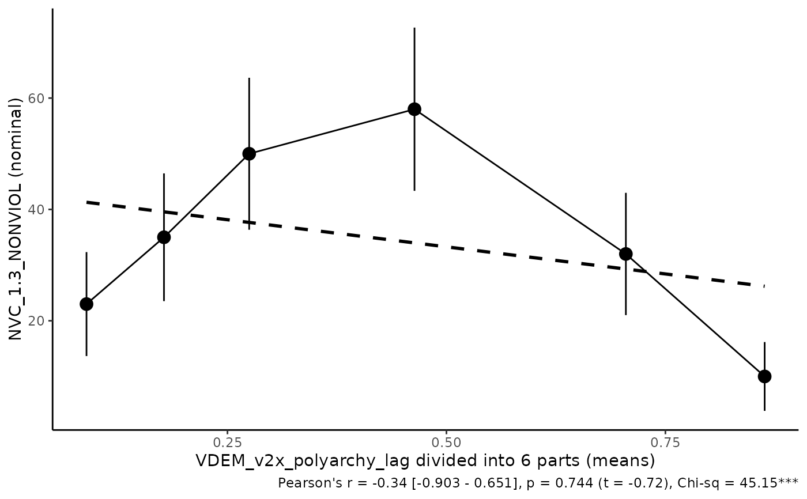
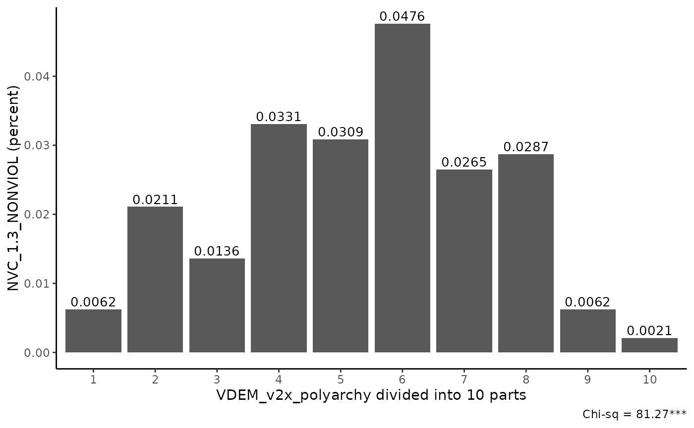

Analysis of a binary data by dividing independent into equal parts
equalparts.RdAnalysis of a binary data by dividing independent into equal parts
Usage
equalparts(
data,
independent,
lag_independent = FALSE,
lag_code,
lead = TRUE,
dependent,
n = 6,
nominal_or_percent = "nominal",
bar_or_scatter = "bar",
regline = TRUE,
range_bars = FALSE,
conf_bars = TRUE,
return_data = FALSE,
save_plot = FALSE,
name_save_plot = "plot"
)Arguments
- data
Dataframe
- independent
Character. Independent variable.
- lag_independent
Logical. Should be independent variable lagged for 1 time-unit?
- lag_code
Character. Passed if lag_independent is False. The name of a variable in the dataframe that is a subject in the data. For ex., country name, iso3 and etc.
- lead
Logical. Passed if lag_independent is False. Should lead be used instead of lag? Lead is used in the case, when in the data's top are earlier time units (for ex., 2022, 2021, 2020, ...). Lag is used when data's top starts with later time units (1900, 1901, ...).
- dependent
Character. Dependent variable.
- n
Int. Number of equal parts on which independent variable should be divided.
- nominal_or_percent
Logical. Should be the output on y-axis (intensity of dependent variable) be in percents or in nominal values? If you want scatter plot it is automatically changed on nominal.
- bar_or_scatter
Character with 2 possible values: "bar", "scatter". Type of figure that should be plotted.
- regline
Logical. Should linear regression line be plotted?
- range_bars
Logical. Should range bars be shown? Range depicts the min and max value of independent variable in each divided group.
- conf_bars
Logical. Should confidence bars be shown? They depict 95%CI for a binary dependent variable.
- return_data
Logical. Should be returned data (table)? If False, plot is returned.
- save_plot
Logical. Should plot be saved in a working directory?
- name_save_plot
Character. Passed if save_plot is False. Name of a plot for saving.
Value
Plot (bar or scatter) or dataframe. In a dataframe there are following columns: parts: number of equal part. In the first are the lowest values, in the last are the highest values Freq_0: number of 0 cases in dependent variable Freq_1: number of 1 cases in dependent variable means: mean of an independent variable in specific equal part min: min value of an independent variable in specific equal part max: max value of an independent variable in specific equal part prc5: 5% percentile of an independent variable in specific equal part prc95: 95% percentile of an independent variable in specific equal part low95CI: lower border of 95% CI of Freq_1 high95CI: higher border of 95% CI of Freq_1
Examples
data("datex")
equalparts(data = datex,
independent = 'VDEM_v2x_polyarchy_lag',
lag_independent = FALSE,
dependent = 'NVC_1.3_NONVIOL',
n = 6,
bar_or_scatter = 'scatter',
regline= TRUE,
return_data = FALSE,
conf_bars = TRUE,
range_bars = FALSE,
save_plot = FALSE)

equalparts(data = datex,
independent = 'VDEM_v2x_polyarchy',
lag_independent = TRUE,
lag_code = "iso3",
lead = TRUE,
dependent = 'NVC_1.3_NONVIOL',
n = 10,
bar_or_scatter = 'bar',
nominal_or_percent = "percent",
return_data = FALSE,
conf_bars = TRUE,
save_plot = TRUE,
name_save_plot = "figure1")
